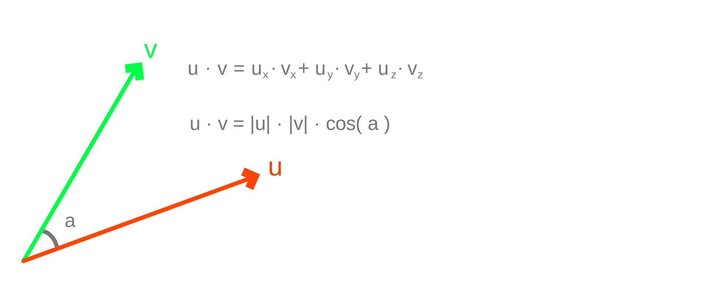
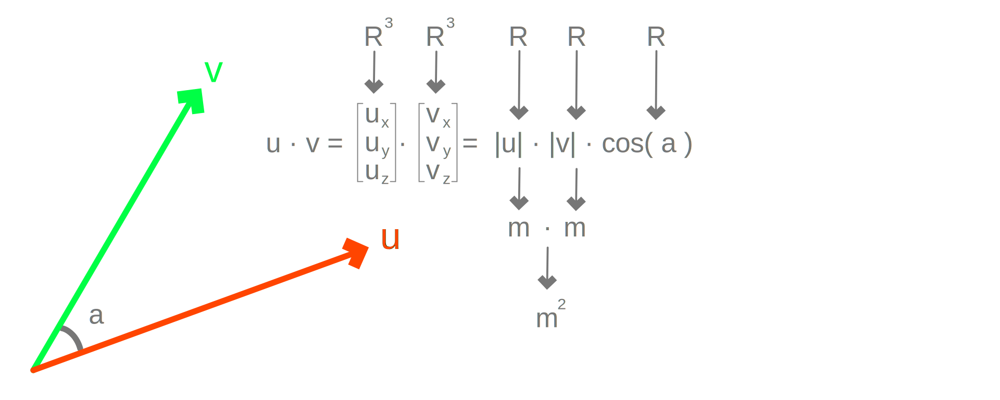
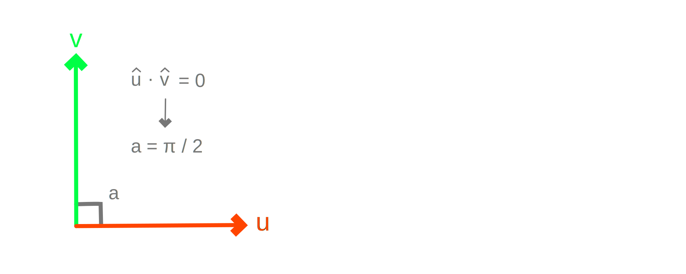
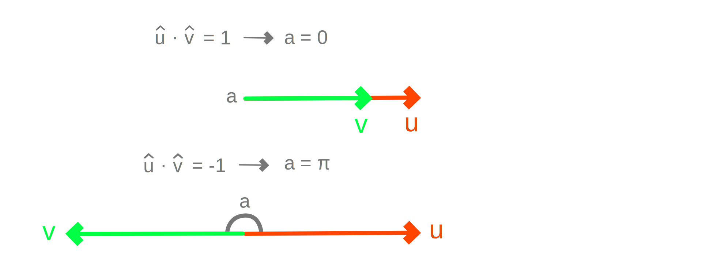
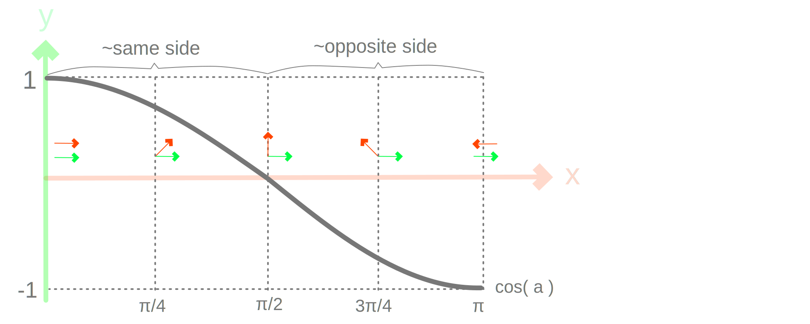
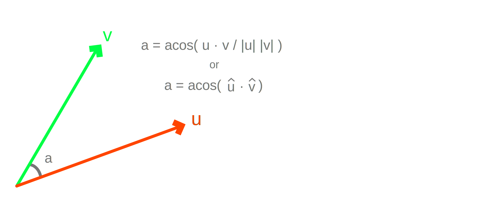
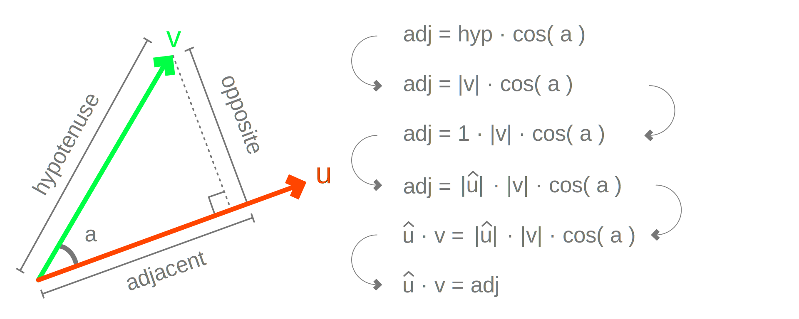

Vector Dot Product
The dot product, also known as scalar product, between two vectors is defined as the sum-product of their components. The concept of the dot product for points is only meaningful if we interpret the points as vectors from the origin. Specifically, suppose the following two vectors are defined:
u = Vector3d( ux, uy, uz )
v = Vector3d( vx, vy, vz )
The result of multiplying those is seen below.

""" General
"""
d = ( u.X * v.X +
u.Y * v.Y +
u.Z * v.Z )
""" Rhino
"""
d = u * v
Algebraic Properties
- The dot product is commutative:
u · v = v · u. - The dot product is not associative:
( u · v ) · w ≠ u · ( v · w )(see note below). - The dot product is also defined as:
u · v = |u| * |v| * cos( a ), where|u|and|v|are the lengths of the vectors andais the angle between the vectors. - The dot product of a vector
uwith itselfu · uis equal to its square length|u|². This is becauseu · u = |u| * |u| * cos( 0 ) = |u|²
Note
The product ( u · v ) · w is a vector in the direction of w and the product u · ( v · w ) is a vector in the direction of u. But w and u may not have the same directions to begin with. Therefore, associativity falls apart.
However, for ( u · v ) · u it works because u · ( v · u ) is the same scaled version of vector u by u · v = v · u. Nevertheless, it is incorrect to swap terms such as u · v · u != u · u · v != v · u · u.
Geometric Interpretation
The dot product is extremely rich geometrically. It is broadly associated with the notion of projection in the sense of "dropping perpendiculars" or going from 3D to 1D since the inputs are three-dimensional vectors and the output is just a single real number.
Dimensional Analysis
The units of the dot product are in square meters because the length of vectors are in meters and the cosine has no units. We can reach the same conclusion using the sum-product definition because vector components express displacements in length units. This is counterintuitive but once either or both vectors are normalized, the dot product starts having more clear geometric meaning.

Perpendicular Directions
From the trigonometric definition of the dot product, zero dot product u · v = 0, implies that the vectors are perpendicular to one another, because cos( ±π/2 ) = 0. Therefore, to test whether two vectors are perpendicular, independent of their length, we can take the dot product and check if it is exactly or near zero.

Matching Directions
The dot product can be a positive or negative number, since -1.0 ≤ cos( a ) ≤ 1.0. Geometrically, two vectors have exactly the same direction when their dot product is 1.0 and exactly the opposite direction in the case of -1.0. This property can be used for checking for exact (mis)alignment between vectors.

Measuring Alignment
In a fuzzy sense, two vectors have the same-ish direction when their dot product is positive u · v > 0 and against one another when u · v < 0. The dot product can be used as a measure of alignment in this sense. If both vectors have unit length |u| = 1 and |v| = 1 then the dot product provides a unit-less value -1 ≤ u · v ≤ 1 which measures similarity or corelation, also known as cosine similarity.

Computing Angles
When both vectors have unit length |u| = 1 and |v| = 1, the dot product provides the angle between the vectors a = arccos( u · v ). Therefore, given two known vectors, to compute the angle between them, we first need to compute their lengths, or normalize them, and then take inverse cosine of their dot product.

Projected Length
When one of the two vectors is unit-length, say |û| = 1, then the dot product is the projected length of vector v onto û. Notice that û · v = 1.0 * |v| * cos( a ). Therefore, cos( a ) = ( û · v ) / |v|. By the definition of the cosine cos = adj / hyp and thus û · v = adj. This operation is extremely useful for geometric constructions and vector analysis.
Note that the dot product may be either a positive or a negative number, while distances are by definition only positive. Thus the projected distance produced by the dot product is also known as the signed distance. The sign just represents whether the distance is towards the vector or against it. Therefore, the projection work either when the two vectors point towards the same or opposite directions.

Type Conversion
In Rhino only the dot product between vectors is supported using the regular multiplication operator. Multiplying points results in exceptions. This behavior can be bypassed, if needed, by first casting points to vectors.
| Type A | * | Type B | = | Type A - B | Interpretation |
|---|---|---|---|---|---|
| Point3d | * | Point3d | = | None |  Exception! Exception! |
| Vector3d | * | Vector3d | = | float |  Dot Product Dot Product |